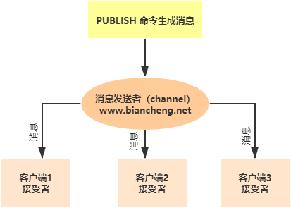

Redis PubSub发布订阅（详细图解）
Redis PubSub 模块又称发布订阅者模式，是一种消息传递系统，实现了消息多播功能。发布者（即发送方）发送消息，订阅者（即接收方）接收消息，而用来传递消息的链路则被称为 channel。在 Redis 中，一个客户端可以订阅任意数量的 channel（可译为频道）。
消息多播：生产者生产一次消息，中间件负责将消息复制到多个消息队列中，每个消息队列由相应的消费组进行消费，这是分布式系统常用的一种解耦方式。
发布/订阅流程
下面的示例演示了“发布/订阅者”模式的工作流程，示意图如下所示：

图1：发布订阅模式
图1：发布订阅模式
1) 订阅者/等待接收消息
首先打开 Redis 客户端，然后订阅了一个名为“www.biancheng.net”的 channel，使用如下命令：#订阅channel 127.0.0.1:6379> SUBSCRIBE www.biancheng.net Reading messages... (press Ctrl-C to quit) 1) "subscribe" 2) "www.biancheng.net" 3) (integer) 1上述示例使用
SUBSCRIBE命令订阅了名为 www.biancheng.net 的 channel。命令执行后该客户端会出处于等待接收消息的阻塞状态。
2) 发布者/发送消息
下面再启动一个 Redis 客户端，输入如下命令：127.0.0.1:6379> PUBLISH www.biancheng.net "this is website" (integer) 1 127.0.0.1:6379> PUBLISH www.biancheng.net "hello world" (integer) 1 127.0.0.1:6379> PUBLISH www.biancheng.net "how are you" (integer) 1
通过上述PUBLISH命令发布了三条信息。现在两个客户端在处于同一个名为“www.biancheng.net”的频道上，前者负责接收消息，后者负责发布消息。
3) 订阅者/成功接收消息
完成了上述操作后，您会在接收消息的客户端得到如下输出结果：
127.0.0.1:6379> SUBSCRIBE www.biancheng.net Reading messages... (press Ctrl-C to quit) 1) "subscribe" 2) "www.biancheng.net" 3) (integer) 1 1) "message" 2) "www.biancheng.net" 3) "this is website" 1) "message" 2) "www.biancheng.net" 3) "hello world" 1) "message" 2) "www.biancheng.net" 3) "how are you"
常用命令汇总
| 命令 | 说明 |
|---|---|
| PSUBSCRIBE pattern [pattern ...] | 订阅一个或多个符合指定模式的频道。 |
| PUBSUB subcommand [argument [argument ...]] |
查看发布/订阅系统状态，可选参数 1) channel 返回在线状态的频道。 2) numpat 返回指定模式的订阅者数量。 3) numsub 返回指定频道的订阅者数量。 |
| PUBSUB subcommand [argument [argument ...]] | 将信息发送到指定的频道。 |
| PUNSUBSCRIBE [pattern [pattern ...]] | 退订所有指定模式的频道。 |
| SUBSCRIBE channel [channel ...] | 订阅一个或者多个频道的消息。 |
| UNSUBSCRIBE [channel [channel ...]] | 退订指定的频道。 |
基本命令应用
下面对上述常用命令做演示：
#订阅指定模式的频道，*代表通配符，会匹配所有www开头的频道 127.0.0.1:6379> PSUBSCRIBE www* Reading messages... (press Ctrl-C to quit) 1) "psubscribe" 2) "www*" 3) (integer) 1 #按ctrl+c退出阻塞状态 ^C C:\Users\Administrator>redis-cli #查看发布订阅系统状态，返回相应的频道 127.0.0.1:6379> PUBSUB channels 1) "www.biancheng.net" #退订指定模式的频道 127.0.0.1:6379> PUNSUBSCRIBE www* 1) "punsubscribe" 2) "www*" 3) (integer) 0 #退订指定频道 127.0.0.1:6379> UNSUBSCRIBE www.biancheng.net 1) "unsubscribe" 2) "www.biancheng.net" 3) (integer) 0
注意：每个模式以*作为匹配符，比如 www* 匹配所有以 www 开头的频道，比如 www.baidu.com 、www.biancheng.net 等等。
在线练习工具：https://try.redis.io/
查看更多命令：https://redis.io/commands
关注公众号「站长严长生」，在手机上阅读所有教程，随时随地都能学习。内含一款搜索神器，免费下载全网书籍和视频。

微信扫码关注公众号